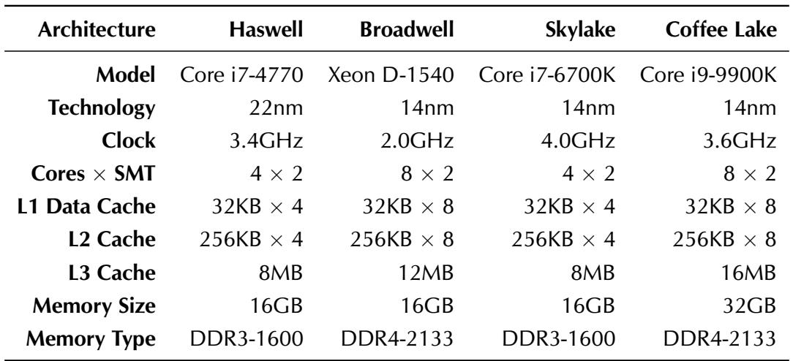

Concurrent Copying Garbage Collection with Hardware Transactional Memory 通俗讲解¶
0. 整体创新点通俗解读¶
痛点直击 (The "Why")
- 传统的 concurrent copying garbage collection (并发复制式垃圾回收) 虽然能有效减少应用暂停时间（latency）并解决内存碎片问题，但它需要确保在回收器（collector）移动对象时，应用程序（mutator）看到的堆内存视图是一致的。
- 为了保证这种一致性，现有方案主要依赖两种机制：read barriers (读屏障) 或 page protection (页面保护)。
- 这两种机制的代价都非常高：
- Read barriers 会在每次从堆中读取引用时插入额外的检查代码。由于读操作极其频繁，这会给 mutator 带来持续且显著的性能开销（论文提到可能高达10%），即使在没有进行 GC 的时候也无法轻易移除。
- Page protection 则通过触发 page fault 来捕获对“陈旧”内存页的访问，其上下文切换和内核态处理的开销同样巨大。
通俗比方 (The Analogy)
- 想象一个图书馆（堆内存）正在进行图书（对象）搬迁。管理员（collector）要把一批书从A区搬到B区，并更新所有指向这些书的索引卡片（指针）。
- 传统方法就像是给每个读者（mutator）配一个监督员（read barrier），每当读者想看书时，监督员都要先检查这本书是不是已经搬走了，如果是，就带他去新位置。或者，直接把A区的门锁上（page protection），任何想进A区的人都会被保安拦下，然后由保安带他去B区找书。
- 这篇论文提出的思路是：与其给每个读者配监督员或锁门，不如让读者在进入图书馆前，先戴上一副特殊的“事务性眼镜”（HTM transaction）。在这副眼镜的视野里，图书馆要么完全是搬迁前的样子，要么完全是搬迁后的样子，绝不会出现一半在A区一半在B区的混乱状态。如果管理员恰好在他戴着眼镜时完成了搬迁，他的这次阅读尝试就会“作废”（transaction abort），他摘下眼镜重新看一眼公告牌（检查全局状态），再决定是否要重新戴上眼镜尝试。这样，大部分时间读者都是自由活动的，只有在极少数“撞车”时刻才需要重试。
关键一招 (The "How")
- 作者的核心洞察是利用 Hardware Transactional Memory (HTM) 的原子性和隔离性来替代昂贵的 read barrier。
- 具体来说，他们并没有让 mutator 永远运行在事务中，而是设计了一个精巧的协调协议：
- Collector 端：当 collector 准备开始一个区域的复制工作时，它会先将一个全局单调计数器（
CollectorCopyingState）设为奇数，然后通过 yieldpoints 通知所有 mutator 线程。 - Mutator 端：Mutator 在 yieldpoint 处收到通知后，知道 collector 即将开始工作。此后，直到下一个 yieldpoint 之前，mutator 会将自己的执行包裹在一个 HTM 事务中。
- Gap Covering：这个事务的关键在于，在事务提交前，它会再次检查那个全局计数器。如果发现计数器已经变成偶数（意味着 collector 已经完成了复制并提交了事务），那么当前 mutator 的事务就会主动中止（
XABORT）。 - 这个中止操作保证了：任何在 collector 完成复制之后、mutator 更新其栈上引用之前的“间隙期”（problematic gap）内发生的 mutator 执行都会被回滚。随后，mutator 会在下一个 yieldpoint 处安全地更新其栈上的陈旧引用。
- Collector 端：当 collector 准备开始一个区域的复制工作时，它会先将一个全局单调计数器（
- 因此，作者巧妙地将原本需要在每一次读操作上都付出的高昂成本，转化成了只在GC活跃期间、并且只在极少数发生冲突的代码路径上才需要付出的、一次性的事务启动和可能的重试成本。 Table 4.1: Machines used in the evaluation.
1. 基于HTM的并发复制垃圾回收算法 (ELI5)¶
痛点直击
- 传统的 并发复制垃圾回收 (Concurrent Copying GC) 面临一个两难困境：既要让应用程序（mutator）和垃圾回收器（collector）同时运行以减少停顿，又要保证 mutator 在任何时候看到的堆内存都是一致且正确的。
- 为了实现这种一致性，现有方案主要依赖两种机制：
- 读屏障 (Read Barriers)：每次从堆中读取一个对象引用时，都要先检查该对象是否已被移动，并可能触发同步逻辑。这就像给每次内存读操作都加了一道安检门，开销巨大且无法轻易关闭。
- 页保护 (Page Protection)：通过操作系统将包含旧对象的内存页设为只读或不可访问，一旦 mutator 访问就会触发缺页中断，由中断处理程序来修复引用。这种方式涉及昂贵的内核态/用户态切换，同样带来很高的性能损耗。
- 这两种方法的核心问题在于，它们都是持续性、侵入式的开销，无论回收器是否正在工作，只要GC系统启动了，这些开销就一直存在。
通俗比方
- 想象一个图书馆（堆内存）正在进行图书（对象）搬迁。管理员（collector）要把A区的书搬到B区。
- 传统方法就像是在A区每个书架前都安排一个保安（读屏障），每当有读者（mutator）想拿书时，保安必须先确认这本书是不是已经搬走了，如果搬走了，还得告诉读者新位置。或者，直接把A区所有书架都锁起来（页保护），读者一碰就报警，然后管理员跑过来开锁并告知新位置。
- 而这篇论文提出的新方法更像是这样：管理员在开始大规模搬迁前，会广播一个通知。在此期间，任何进入图书馆的读者都会被要求戴上一个特殊的“事务眼镜”（HTM）。这个眼镜有一个神奇的功能：它能记录下读者在馆内所有的行动。如果在读者阅读期间，管理员恰好完成了某批书的搬迁并更新了目录，那么这位读者刚才所看到的一切（基于旧目录的）就会被瞬间“回滚”，他会被要求重新进入图书馆，这次就能看到最新的、正确的目录了。这个“眼镜”的成本只在佩戴和摘下时产生，而不是在每一次翻书时都产生。
关键一招
- 作者的核心洞察是：不需要时刻监控 mutator 的每一次读操作，只需要确保在 collector 完成一次关键的“发布”动作（即提交对象移动和指针更新）时，没有任何 mutator 正在基于旧状态执行错误的逻辑。
- 为了实现这一点，他们设计了一个精巧的协调协议：
- Collector 端：使用 HTM 事务来原子地完成“复制对象 + 更新堆内所有相关指针”这一系列操作。事务提交的那一刻，就是“发布”新状态的时刻。
- Mutator 端：引入一个全局的单调递增计数器（
CollectorCopyingState）来标记回收阶段。当计数器为奇数时，表示 collector 即将或正在尝试进行事务性复制。 - Mutator 的执行被 yieldpoint 切分成小段。在每一段开始前，mutator 会检查计数器。如果发现计数器是奇数，它就会将自己的整段执行包裹在一个 HTM 事务中。
- 最关键的逻辑转换在于：在事务结束提交前，mutator 会再次检查全局计数器。如果发现计数器已经变为偶数（意味着 collector 的事务已经成功提交），那么 mutator 的事务就会主动中止 (XABORT)。HTM 的硬件机制会自动回滚这段执行期间的所有副作用，确保错误的状态不会被提交。
- 这样，通过让 mutator 在潜在的危险窗口期短暂地、批量地在事务中执行，巧妙地利用了 HTM 的原子性和回滚能力，替代了细粒度、持续性的读屏障。开销从“每次读都付费”变成了“每次执行片段开始时尝试开启事务，并在必要时回滚”，在大多数情况下能显著降低平均开销。
 Figure 5.1: Success rate curves on Haswell.
Figure 5.1: Success rate curves on Haswell.
2. Collector-Mutator协调协议 (ELI5)¶
痛点直击 (The "Why")
- 传统的 concurrent copying GC 面临一个两难困境：要么用昂贵的 read barrier（每次读对象都要检查），要么用复杂的 page protection（触发页错误来修复指针）。这两种方法都会给 mutator（应用程序）带来持续且显著的性能开销。
- 核心难点在于 “问题间隙” (Problematic Gap)：当 collector（垃圾回收器）在后台把一个对象从 fromspace 复制到 tospace 并提交事务后，到 mutator 线程发现这个变化并更新自己栈上的旧指针之前，存在一个微小但致命的时间窗口。在这个窗口里，mutator 可能会使用栈上已经失效的 fromspace 指针，导致读取到错误数据或丢失写入。
通俗比方 (The Analogy)
- 想象你在和朋友玩一个“同步画画”的游戏。你（collector）负责把画布A上的画作原样搬到画布B上。你的朋友（mutator）则根据他脑子里记住的坐标（stack reference）在画布上作画。
- 以前的做法是：要么让你朋友每次下笔前都打电话问你“画搬完了吗？”（read barrier，很烦人）；要么直接把画布A盖起来，等他想用时再告诉他去画布B（page protection，有延迟）。
- 这篇论文的新思路是：你搬完画后，立刻按下一个全局喇叭（CollectorCopyingState 计数器）。你朋友每隔一小会儿（在 yieldpoint）就会抬头看一眼喇叭有没有响。如果响了，他就知道刚才那几笔可能画错地方了，于是立刻擦掉重画（abort transaction）。这样，他大部分时间都可以自由作画，只有在你搬画的关键时刻才需要额外检查。
关键一招 (The "How")
- 作者没有给 mutator 的每一次内存访问都加上检查，而是巧妙地利用了 **Hardware Transactional Memory **(HTM) 和 yieldpoint 机制，在 collector 和 mutator 之间建立了一个轻量级的协调协议。
- 具体来说，这个协议通过以下几步扭转了局面：
- 引入一个全局信号：使用一个单调递增的 CollectorCopyingState 计数器。collector 在开始和结束一次复制事务时，都会让计数器加1。因此，奇数表示“正在搬家”，偶数表示“刚刚搬完”。
- Mutator 主动握手：mutator 只在 yieldpoint（如循环回边、函数返回等预设的安全点）检查这个计数器。如果发现自上次检查以来，计数器变成过偶数，就意味着它可能在“问题间隙”里执行过代码。
- 用事务包裹执行：当 mutator 发现 CollectorCopyingState 是奇数（即 collector 正在工作）时，它会将自己的下一段执行逻辑包裹在一个 HTM transaction 里。
- 自动回滚错误：如果在这段事务执行期间，collector 完成了搬家（计数器变为偶数），那么 mutator 事务在提交前会检查计数器。一旦发现计数器变了，就主动 abort。HTM 的硬件特性会自动回滚这段执行，确保任何基于旧指针的错误操作都被抹去。之后 mutator 会在下一个 yieldpoint 更新自己的栈指针，并重试。
Table 4.1: Machines used in the evaluation.
3. 乐观复制优化 (Optimistic Copying) (ELI5)¶
痛点直击 (The "Why")
- 作者想用 HTM (Hardware Transactional Memory) 来做并发垃圾回收，核心想法是在一个事务里完成对象复制和所有指针更新，保证原子性。
- 但 HTM 的写容量 (write capacity) 极其有限（论文第五章实验证明，通常只有 20-25KB 左右），而直接在事务里复制对象会产生海量的写操作（把源对象每个字节都写到新位置）。
- 这导致一个很“难受”的局面：即使要复制的对象总大小没超过读容量，也因为写操作太多而频繁触发事务 abort，让整个方案变得不切实际。
通俗比方 (The Analogy)
- 想象你要把一个装满文件的保险柜（fromspace 对象）搬到另一个新保险柜（tospace 对象）。传统做法是，在一个上锁的房间里（事务内）完成所有搬运工作。但这个房间太小，你搬几份文件就满了（写缓冲区溢出），只能不断放弃重来。
- “乐观复制”就像这样：你先在房间外找一个临时桌子（shadow region），快速把旧保险柜里的文件原样摆一份在桌子上。然后，你只带着一张清单（比较逻辑）进那个小房间。在房间里，你只需要核对旧保险柜和桌子上的文件是否完全一致。如果一致，说明没人动过旧柜子，你的“搬运计划”是有效的，就可以安全地宣布新保险柜正式启用；如果不一致，说明有人在你准备期间修改了旧柜子，这次搬运作废，下次再来。
- 关键在于，真正费力气的搬运工作（写操作）被挪到了房间外，而房间里只做轻松的核对工作（读操作），从而完美适应了小房间（HTM）的空间限制。
关键一招 (The "How")
- 作者并没有在 HTM 事务内部执行昂贵的对象复制（
copy(object)），而是巧妙地将流程拆解为事务内外两部分：- 事务外 (Optimistic Phase):
- 将待移动的 fromspace 对象 O 完整地复制一份到一个临时的 shadow region，得到快照 Os。
- 然后，用这个快照 Os 作为模板，在 tospace 中创建最终的目标对象 O'。
- 事务内 (Validation Phase):
- 不再进行任何实质性的数据复制（写操作）。
- 只做一件事：逐字节比较原始对象 O 和它的快照 Os。
- 如果 O == Os，证明在准备阶段没有发生并发修改，O' 是有效的，事务提交，发布 O'。
- 如果 O != Os，证明有并发写入导致数据不一致，事务主动 abort，丢弃 O'，下次重试。
- 事务外 (Optimistic Phase):
- 这一招的精髓在于，它把事务内的 大量写操作（复制 O 到 O'）成功转换成了 大量读操作（比较 O 和 Os）。由于 HTM 的 读容量远大于写容量（论文显示读容量可达数 MB），这极大地提高了事务的成功率，使整个并发 GC 方案变得可行。
4. 缓存预热优化 (Cache Warmup) (ELI5)¶
痛点直击
- 传统的 HTM (Hardware Transactional Memory) 事务在执行时，其成功与否严重依赖于底层 CPU缓存的状态。
- 问题在于 伪LRU (pseudo-LRU) 替换策略：即使一个事务访问的数据总量小于缓存容量，但如果这些数据在事务开始前不在缓存里，它们在被加载进来的同时，可能会因为替换算法的“不完美”而挤掉其他同样属于该事务的、刚刚被加载的数据。
- 这导致了一个非常难受的局面：一个本应能成功的 大读取事务 (large read-only transaction)，仅仅因为初始缓存是“冷”的（充满了无关数据），就在执行过程中因缓存行被错误地驱逐而触发了 非必要的容量中止 (spurious capacity abort)。这使得 HTM 的有效容量变得不可预测且远低于理论值。
通俗比方
- 想象你要在一个拥挤的图书馆（CPU缓存）里完成一项研究（HTM事务）。你的研究需要查阅100本书（数据），而图书馆恰好有100个空位。
- 但是，图书管理员（伪LRU替换策略）用的是一套不完美的记忆法。当你开始找第一本书时，它被放在了架子上。但当你去找第二本时，管理员可能错误地认为第一本“不重要”了，把它拿走给第二本腾位置。
- 结果就是，尽管图书馆物理空间足够，你却永远无法同时拥有所有100本书来完成研究，因为你总是在找新书的时候弄丢旧书。
- 缓存预热 就像是在正式研究开始前，你先派一个助手快速地把这100本书都借一遍再还回去。这样，当管理员看到你正式开始研究时，这100本书已经在他的“近期借阅”名单顶部了，他就会尽力把它们都留在架子上供你使用。
关键一招
- 作者没有去修改复杂的 CPU 缓存硬件或替换策略（这显然不可能），而是巧妙地在软件层面增加了一个预备步骤。
- 具体来说，在真正启动那个关键的 收集器事务 (collector transaction) 之前，系统会预先执行一遍该事务的主体代码逻辑（特别是其中大量的内存比较操作），但会主动丢弃这次执行的所有结果。
- 这个“空跑”过程的唯一目的，就是让 CPU 的缓存子系统将事务即将频繁访问的所有内存地址（缓存行）都提前加载到高速缓存中，并通过多次访问让它们在 伪LRU 队列中获得很高的优先级。
- 通过这个简单的“预演”操作，当真正的事务开始时，它所依赖的数据已经“热”在缓存里了，从而极大地降低了因缓存抖动而导致的非必要中止，有效放大了HTM的实际可用读取容量。
 Figure 5.10: Success rate curves on Coffee Lake when warming up caches.
Figure 5.10: Success rate curves on Coffee Lake when warming up caches.
5. HTM容量特性分析 (ELI5)¶
痛点直击
- 之前研究HTM（Hardware Transactional Memory）容量时，大家报告的数字五花八门，甚至互相矛盾。有的说读事务能到7.5MB，有的却说连L1缓存大小都撑不住。这让想用HTM做系统设计的人非常难受：我到底能指望它处理多大的原子操作？这种不确定性直接阻碍了HTM在像垃圾回收这类对事务大小有要求的场景中的应用。
- 根本原因在于，大家都忽略了缓存状态这个“隐藏变量”。HTM的底层实现严重依赖CPU缓存来追踪事务内的读写集，而缓存的行为（比如替换策略）会极大地影响一个事务能否成功提交。之前的实验方法不统一，有的重用内存，有的不用，导致结果无法横向比较，造成了文献中的混乱局面。
通俗比方
- 想象HTM事务就像一个需要在一张有限大小的白板上完成所有草稿计算的数学家。这张白板就是CPU缓存。
- 清空缓存（Invalidation）就像是把白板彻底擦干净，给新计算腾出最大、最连续的空间。
- 预热缓存（Warmup）则像是提前把需要用到的公式和数据抄到白板的固定位置上，确保计算时伸手就能拿到，不会因为临时去找而把其他重要内容挤掉。
- 重用内存区域就像是反复在白板的同一块区域演算，虽然没特意准备，但因为内容相似，旧的草稿和新的计算能很好地共存，不容易超出白板范围。
- 之前的实验者，有的用的是干净白板，有的用的是乱糟糟的旧白板，自然得出的“最大计算量”就完全不同。这篇论文的贡献就是揭示了“白板的初始状态”才是关键，并给出了让白板发挥最大效用的方法。
关键一招
- 作者没有停留在复现矛盾数据上，而是设计了一套精巧的对照实验，系统地操控缓存的初始状态这个变量。
- 他通过三种方式验证了自己的猜想：
- 重用内存：让不同大小的事务测试都跑在同一块内存区域上。
- 清空缓存：在每次事务开始前，用
wbinvd指令强制清空所有级别的缓存。 - 预热缓存：在事务开始前，先非事务性地多次访问即将在事务中读取的数据。
- 实验结果惊人地一致：这三种看似不同的操作，都能显著提升大读事务的成功率。这背后的核心逻辑是，它们都绕过了CPU缓存（特别是pseudo-LRU替换策略）的缺陷。在正常情况下，即使事务工作集小于缓存总容量，伪LRU算法也可能错误地驱逐掉事务刚访问过的缓存行，导致不必要的容量溢出（Capacity Abort）。而这三种方法要么提供了完全干净的空间，要么让所需数据牢牢占据缓存，从而避免了这种“假溢出”。
- 这个发现完美解释了文献中的矛盾：那些报告高容量的实验，很可能无意中采用了类似“重用内存”或“预热”的模式；而报告低容量的，则可能是在冷缓存或不利的内存访问模式下进行的。
 Figure 5.9: Success rate curves on Coffee Lake when invalidating caches.
Figure 5.10: Success rate curves on Coffee Lake when warming up caches.
Figure 5.9: Success rate curves on Coffee Lake when invalidating caches.
Figure 5.10: Success rate curves on Coffee Lake when warming up caches.